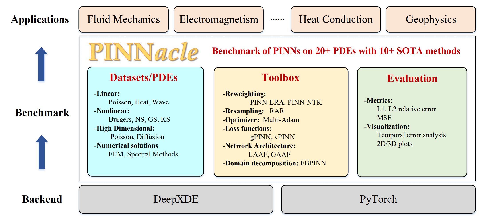
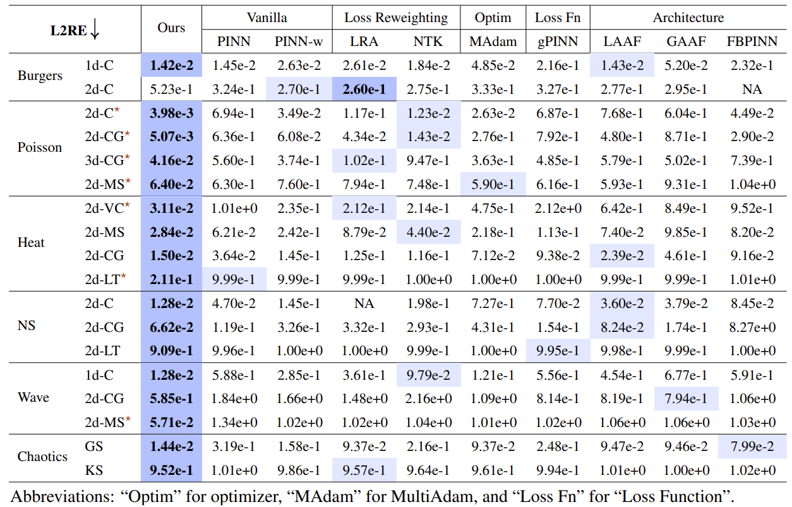

About Me
Hello! I’m a passionate undergrad researcher at the intersection of machine learning, mathematics, and real-world applications.
I am currently advised by Professor Jun Zhu at Tsinghua University. I am interested in machine learning, with a broad focus on optimization, AI for Science and human-AI interaction.
I am also exploring the integration of human knowledge with DL and RL (in the context of LLMs) to build more intelligent and robust agents.
During my summer intership at Stanford, I am fortunate to work with PhD candidate Jackie Yang under the guidance of Professor James Landay and Professor Monica Lam.
We developed the first socially appropriate whispered voice input method using earbuds.
The cross-lingual learning ability and hidden knowledge distribution in large models were particularly fascinating to me.
Research Interests
- Machine Learning: I aim to leverage AI to unravel the complexities of the real world and discover novel scientific principles.
Recognizing the limitations of purely data-driven approaches, I plan to foster a bi-directional flow of representation and knowledge to improve capability and robustness in scientific machine learning and machine learning as a whole.
- Human-AI Interaction: I aim to contribute to the field of technical human-computer interaction by developing novel solutions that address human challenges.
My focus is on bridging the gap between technical innovation and real-world application, facilitating interaction through AI and with AI in an advanced and socially responsible manner.
News
- [Jan. 2024] I will embark on an educational journey to Australia and New Zealand, sponsored by Tsinghua University’s Spark Program. Feel free to reach out!
- [Jul. 2023] I will travel to Hawaii to attend ICML 2023.
- [Jun. 2023] I will travel to California for a fully-funded summer research program at Stanford!
- [Apr. 2023] Our paper about PINN optimization is accepted to ICML 2023.
Publications
* denotes equal contribution
-

Zhongkai Hao*, Jiachen Yao*, Chang Su*, Hang Su, Ziao Wang, Fanzhi Lu, Zeyu Xia, Yichi Zhang, Songming Liu, Lu Lu, and Jun Zhu.
In submission, 2024.
-

Songming Liu, Chang Su*, Jiachen Yao*, Zhongkai Hao, Hang Su, Youjia Wu, and Jun Zhu.
In submission, 2024.
-
Jiachen Yao*, Chang Su*, Zhongkai Hao, Songming Liu, Hang Su, and Jun Zhu.
International Conference on Machine Learning (ICML), 2023.
-
Yue Qin, Chun Yu, Wentao Yao, Jiachen Yao, Chen Liang, Yueting Weng, Yukang Yan,and Yuanchun Shi.
Conference on Human Factors in Computing Systems (CHI), 2023.
Honors and Awards
Undergrad Honors
Personal Interests
Hobbies
Technical Skills
- Python, C/C++, JavaScript/TypeScript, MATLAB
- PyTorch, Huggingface, React
- Linux, Git, Docker
Powered by Jekyll and Minimal Light theme.